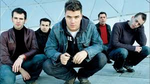

Conoce al canto del loco
Somos el canto del loco
Dani Martín, David Otero, Chema Ruiz, Jandro Velázquez, Ivan Ganchegui

Dani Martín: el vocalista del grupo y cantante en solitario
Ivan Ganchegui guitarrista del grupo
Además continuo en solitario con Dani Martin
David Otero el gran bateria del grupo
David es un gran bateria desde que era niño y golpeaba todo lo que veia para crear sonidos